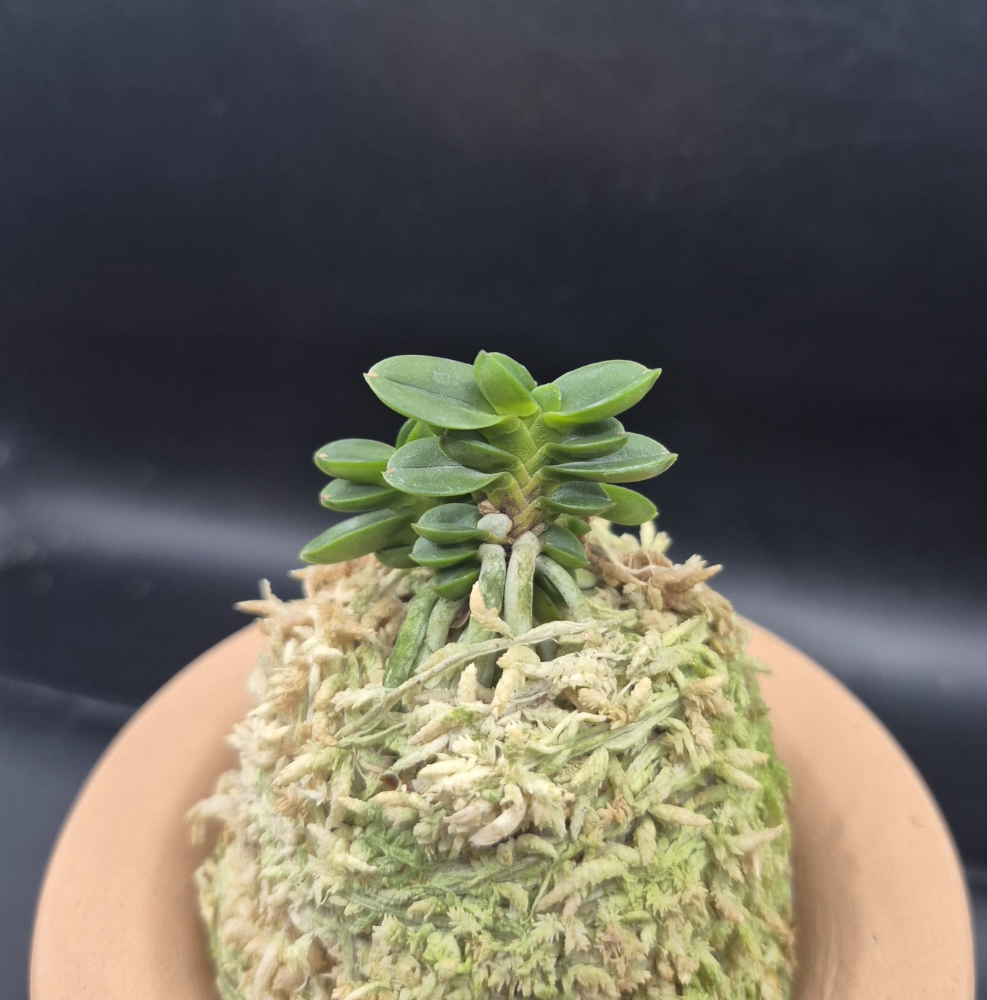
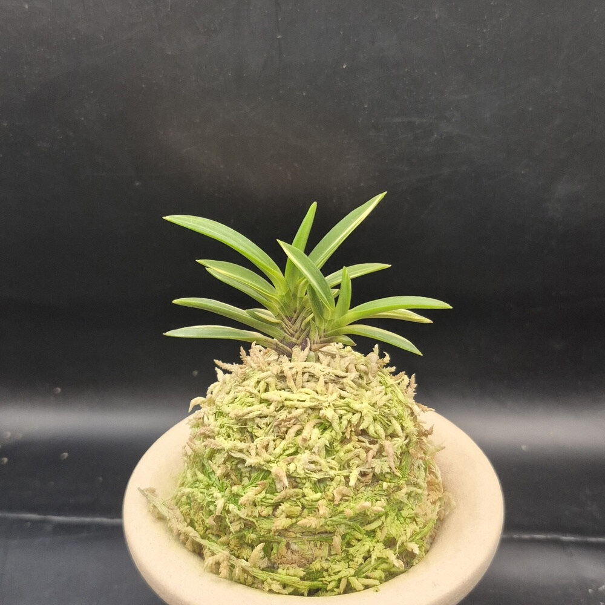
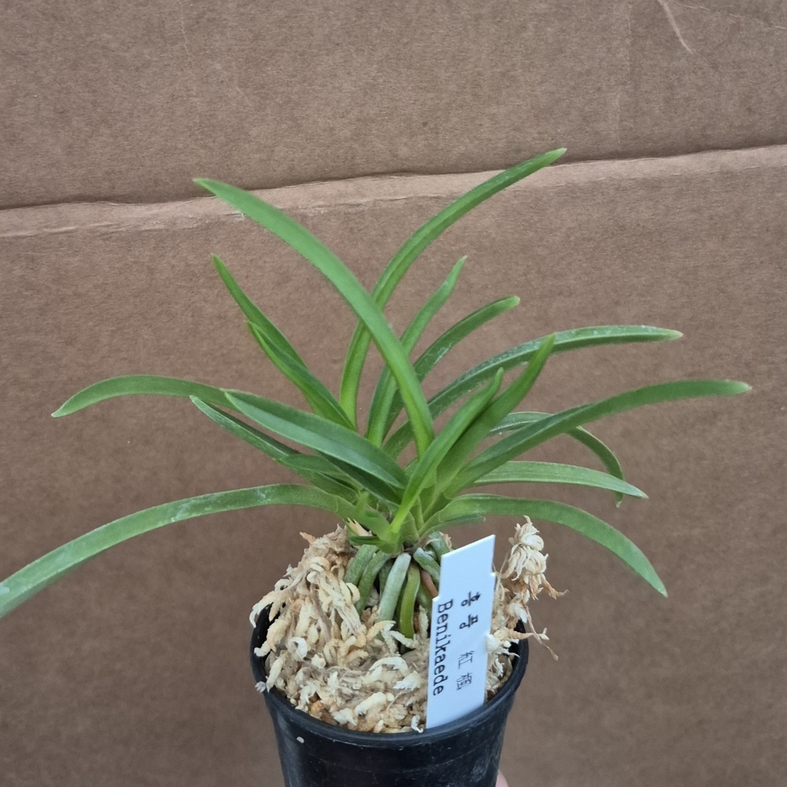

CSFART ORCHID COLLECTION
숯돌꽃 난농원
실제 판매 개체 사진과 상세 설명으로 만나는 풍란 도감
품종 둘러보기

무지동환 0001 · 상품 1개

호·중반백결 · 금두 6121 · 보금 3811 · 상품 3개

복륜옥금 · 서시 · 상품 2개
등록할 실물사진 준비 중
특예등록 상품 준비 중
등록할 실물사진 준비 중
호반등록 상품 준비 중

화물홍야 0001 · 홍풍 0001 · 상품 2건
등록할 실물사진 준비 중
입문·기타란등록 상품 준비 중
등록할 실물사진 준비 중
자재등록 상품 준비 중
등록 상품: 백결 단엽 0001 · 옥금(玉錦) 풍란 · 서시 1001 풍란 · 금두(金兜) 6121 황호 풍란 · 보금(寶錦) 3811 백황호 풍란 · 동환(童丸) 0001 무지 두엽 · 홍야(紅夜) 0001 색화